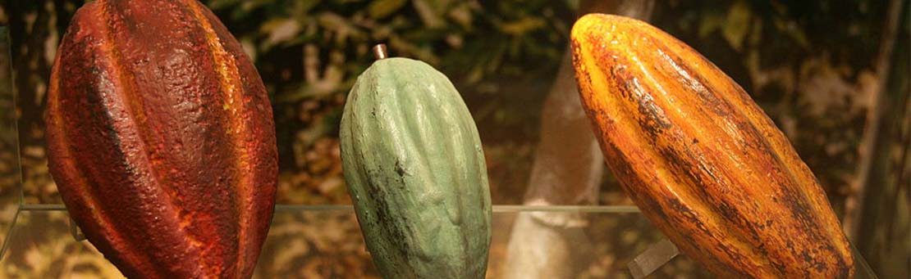

Le chocolat fut découvert par les Espagnols en 1519 quand Hernán Cortés, débarquant au Mexique, se vit offrir en cadeau de bienvenue la boisson locale préférée : le "Tchocoatl."
Le chocolat était consommé par les Aztèques sous forme d'un breuvage rituel pimenté, élaboré à partir de pâte de cacao râpée, mélangée à de l'eau, parfumée à la vanille, agrémentée de diverses autres épices et épaissie avec de la farine de maïs.
Le cacao était déjà cultivé par les Olmèques et les Mayas qui en utilisaient les fèves comme monnaie d'échange ainsi que pour le paiement de l'impôt ! Les Espagnols eurent l'idée d'incorporer du sucre de canne au cacao, dont ils développèrent rapidement la culture dans les régions tropicales d'Amérique Centrale et du Sud, et dans les Caraïbes.
Les premières fèves de cacao furent ramenées en Espagne dès le retour d'Hernán Cortés dans la Péninsule en 1528, mais des arrivages réguliers en provenance du Mexique ne commencèrent à être débarqués à Séville qu'à la fin du XVIe siècle et ce ne fut véritablement qu'au début du XVIIe siècle que le chocolat devint peu à peu une « passion obsessionnelle » de la vie quotidienne espagnole.
L'Espagne garda jalousement le monopole de l'importation du cacao en Europe et le secret de la fabrication du chocolat. Mais, dès le milieu du XVIIe siècle, les Hollandais, puis les Anglais et les Français se mirent aussi à importer des fèves de cacao.
Selon toute vraisemblance, ce fut le mariage, célébré en 1615, de l'infante Anne d'Autriche, fille de Philippe III d'Espagne, et de Louis XIII qui contribua à l'introduction du chocolat à la Cour de France. Mais sa consommation ne commença vraiment à se répandre qu'après le mariage de Marie-Thérèse d'Autriche et de Louis XIV, en 1660. Les premiers ateliers de traitement du cacao furent fondés au cours du XVIIe siècle à Bayonne, ainsi que dans plusieurs villes du Sud-Ouest de la France, par des membres de la communauté juive marrane, chassés d'Espagne et du Portugal.
Populaire en Espagne, le cacao demeura très longtemps en France à l'usage exclusif de la Cour et de l'aristocratie. C'est peut-être la raison pour laquelle le chocolat français est resté un produit noble, à grande teneur en cacao, ce qui en fait son prix mais aussi sa qualité.
Ce n'est qu'au début du XIXe siècle, avec le développement des techniques de fabrication et, en particulier, la baisse du prix du sucre, que le chocolat put connaître un grand développement industriel, ses qualités gustatives et ses vertus en faisant une friandise et une boisson très appréciées.
C'est également à cette époque que le cacaoyer fut introduit en Afrique par les Portugais et dans le Sud-Est Asiatique par les Hollandais.
Par Nikita Harwitch